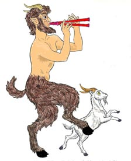

SATYR

Сатир - получеловек-полукоза. Имеют злой характер. Они от природы проворны, но
мало силы. Благодаря своей ловкости, они с легкостью могут воровать, скрываться и
неожиданно нападать.
Базовый экспириенс для Сатира:
Thief = 1250 Warrior = 1250 Ranger = 1450